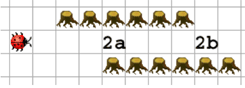

Kara sucht den Eingang eines geraden Tunnels (Feld 2a). Schreiben Sie ein Programm, das ihn auf dem ersten Feld im Tunnelinnern anhalten lässt. Aber Achtung: manche Tunnels haben zunächst eine einseitige Wand, manche links, manche rechts.